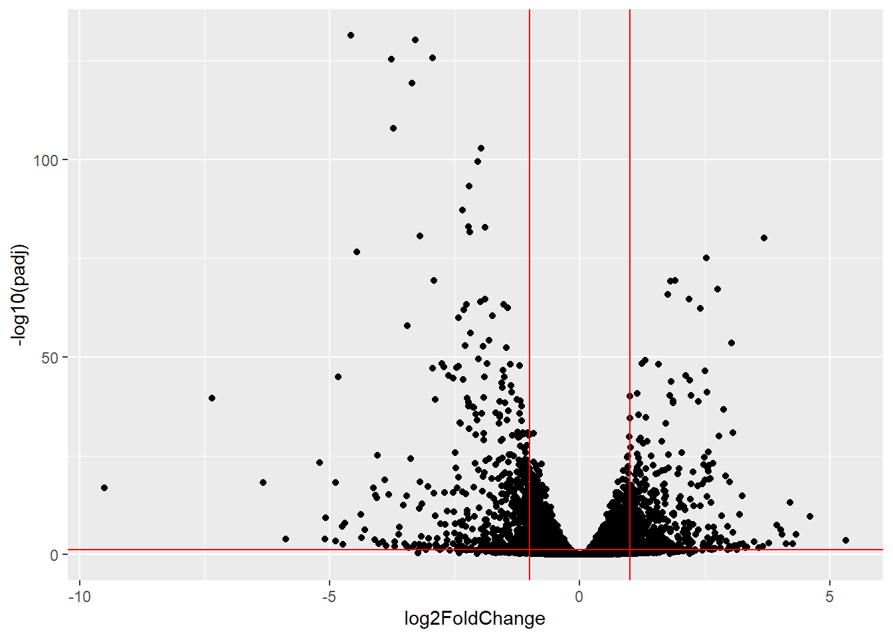
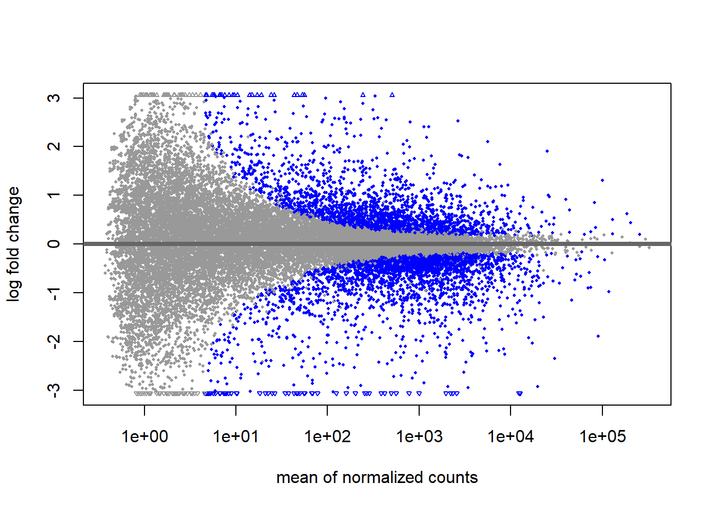

library("DESeq2")27 Differential expression analysis with DESeq2
A basic task in the analysis of RNA-seq count data is the detection of differentially expressed genes. The count data are presented as a table which reports, for each sample, the number of sequence fragments that have been assigned to each gene. An important analysis question is the quantification and statistical inference of systematic changes between conditions, as compared to within-condition variability.
We start by loading the DESeq2 package, a very popular method for analysing differential expression of bulk RNA-seq data.
DESeq2 requires count data like that in the SummarizedExperiment we have been working with.
The airway experimental data package contains an example dataset from an RNA-Seq experiment of read counts per gene for airway smooth muscles. These data are stored in a RangedSummarizedExperiment object which contains 8 different experimental samples and assays 64,102 gene transcripts.
library(airway)
data(airway)
se <- airway
rowRanges(se)GRangesList object of length 64102:
$ENSG00000000003
GRanges object with 17 ranges and 2 metadata columns:
seqnames ranges strand | exon_id exon_name
<Rle> <IRanges> <Rle> | <integer> <character>
[1] X 99883667-99884983 - | 667145 ENSE00001459322
[2] X 99885756-99885863 - | 667146 ENSE00000868868
[3] X 99887482-99887565 - | 667147 ENSE00000401072
[4] X 99887538-99887565 - | 667148 ENSE00001849132
[5] X 99888402-99888536 - | 667149 ENSE00003554016
... ... ... ... . ... ...
[13] X 99890555-99890743 - | 667156 ENSE00003512331
[14] X 99891188-99891686 - | 667158 ENSE00001886883
[15] X 99891605-99891803 - | 667159 ENSE00001855382
[16] X 99891790-99892101 - | 667160 ENSE00001863395
[17] X 99894942-99894988 - | 667161 ENSE00001828996
-------
seqinfo: 722 sequences (1 circular) from an unspecified genome
...
<64101 more elements>colData(se)DataFrame with 8 rows and 9 columns
SampleName cell dex albut Run avgLength
<factor> <factor> <factor> <factor> <factor> <integer>
SRR1039508 GSM1275862 N61311 untrt untrt SRR1039508 126
SRR1039509 GSM1275863 N61311 trt untrt SRR1039509 126
SRR1039512 GSM1275866 N052611 untrt untrt SRR1039512 126
SRR1039513 GSM1275867 N052611 trt untrt SRR1039513 87
SRR1039516 GSM1275870 N080611 untrt untrt SRR1039516 120
SRR1039517 GSM1275871 N080611 trt untrt SRR1039517 126
SRR1039520 GSM1275874 N061011 untrt untrt SRR1039520 101
SRR1039521 GSM1275875 N061011 trt untrt SRR1039521 98
Experiment Sample BioSample
<factor> <factor> <factor>
SRR1039508 SRX384345 SRS508568 SAMN02422669
SRR1039509 SRX384346 SRS508567 SAMN02422675
SRR1039512 SRX384349 SRS508571 SAMN02422678
SRR1039513 SRX384350 SRS508572 SAMN02422670
SRR1039516 SRX384353 SRS508575 SAMN02422682
SRR1039517 SRX384354 SRS508576 SAMN02422673
SRR1039520 SRX384357 SRS508579 SAMN02422683
SRR1039521 SRX384358 SRS508580 SAMN02422677The package requires count data like that in the SummarizedExperiment we have been working with, in addition to a formula describing the experimental design. We use the cell line as a covariate, and dexamethazone treatment as the main factor that we are interested in.
dds <- DESeqDataSet(se, design = ~ cell + dex)
ddsclass: DESeqDataSet
dim: 64102 8
metadata(2): '' version
assays(1): counts
rownames(64102): ENSG00000000003 ENSG00000000005 ... LRG_98 LRG_99
rowData names(0):
colnames(8): SRR1039508 SRR1039509 ... SRR1039520 SRR1039521
colData names(9): SampleName cell ... Sample BioSampleThe dds object can be manipulated very much like a SummarizedExperiment (in fact: it is a SummarizedExperiment).
There are two reasons which make pre-filtering useful: by removing genes with only few reads across samples, we reduce the size of the dds data object, and thus increase the speed of the transformation and testing functions within DESeq2.
Here we perform a minimal pre-filtering to keep only rows that have at least 10 reads total.
keep <- rowSums(counts(dds)) >= 4
table(keep)keep
FALSE TRUE
38065 26037 dds <- dds[keep,]The DESeq workflow is summarized by a single function call, which performs statistical analysis on the data in the dds object.
dds <- DESeq(dds)estimating size factorsestimating dispersionsgene-wise dispersion estimatesmean-dispersion relationshipfinal dispersion estimatesfitting model and testingA table summarizing measures of differential expression can be extracted from the object, and visualized or manipulated using commands we learned earlier.
res <- results(dds)
reslog2 fold change (MLE): dex untrt vs trt
Wald test p-value: dex untrt vs trt
DataFrame with 26037 rows and 6 columns
baseMean log2FoldChange lfcSE stat pvalue
<numeric> <numeric> <numeric> <numeric> <numeric>
ENSG00000000003 708.6022 0.3812540 0.1006481 3.787991 1.51870e-04
ENSG00000000419 520.2979 -0.2068126 0.1122057 -1.843156 6.53062e-02
ENSG00000000457 237.1630 -0.0379208 0.1434092 -0.264424 7.91453e-01
ENSG00000000460 57.9326 0.0881869 0.2870343 0.307235 7.58665e-01
ENSG00000000971 5817.3529 -0.4264020 0.0883274 -4.827518 1.38245e-06
... ... ... ... ... ...
ENSG00000273483 2.68957 -0.853977 1.263630 -0.6758122 0.499160
ENSG00000273485 1.28645 0.126938 1.599851 0.0793439 0.936759
ENSG00000273486 15.45254 0.150965 0.486291 0.3104406 0.756226
ENSG00000273487 8.16323 -1.046370 0.698689 -1.4976178 0.134233
ENSG00000273488 8.58448 -0.107881 0.637827 -0.1691383 0.865688
padj
<numeric>
ENSG00000000003 0.001277877
ENSG00000000419 0.195842165
ENSG00000000457 0.910932644
ENSG00000000460 0.894349388
ENSG00000000971 0.000018203
... ...
ENSG00000273483 NA
ENSG00000273485 NA
ENSG00000273486 0.893423
ENSG00000273487 0.328270
ENSG00000273488 0.945105Task:
Use the contrast argument of the results function to compare trt vs. untrt groups instead of untrt vs. trt (changes the direction of the fold change).
27.1 Volcano plot
A useful illustration of differential expression results is to plot the fold change against the p-value in a volcano plot. This allows to inspect direction and magnitude (fold change) as well as the statistical significance (p-value) of the expression change.
library(ggplot2)
ggplot(as.data.frame(res),
aes(x = log2FoldChange, y = -log10(padj))) + geom_point()Warning: Removed 8077 rows containing missing values (`geom_point()`).
27.2 MA plot
Another useful illustration of differential expression results is to plot the fold changes as a function of the mean of the expression level (normalized counts) across samples in an MA plot.
Points will be colored if the adjusted p-value is less than a defined significance threshold (default: 0.1). Points which fall out of the window are plotted as open triangles pointing either up or down.
plotMA(res)
The DESeq2 vignette also describes several other useful result exploration and data quality assessment plots.
Exercises
This lesson was adapted from materials created by Ludwig Geistlinger